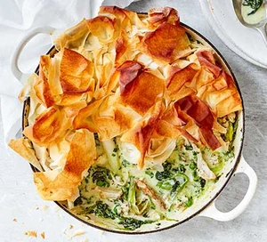
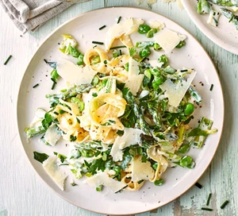
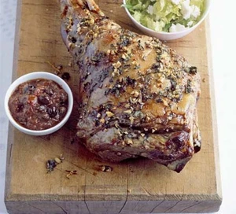
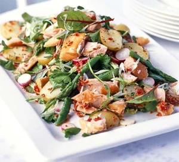
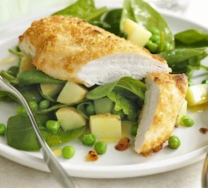
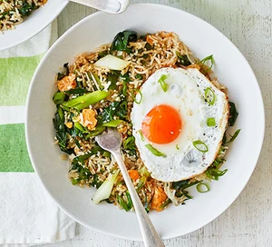

| Ingredients | Quantity |
|---|
2 tbsp olive oil , plus a little extra for brushing over the pastry
bunch spring onions , sliced into 3cm pieces
250g frozen spinach
6 ready-cooked chicken thighs
350ml hot chicken stock
½ tbsp wholegrain mustard
200g frozen peas
200ml half-fat crème fraîche
½ small bunch tarragon , leaves finely chopped
small bunch parsley , finely chopped
270g pack filo pastry
| Steps |
|---|
Step 1: Heat oven to 200C/180C fan/gas 6. Heat the oil in a large, shallow casserole dish on a medium heat. Add the spring onions and fry for 3 mins, then stir through the frozen spinach and cook for 2 mins or until it’s starting to wilt. Remove the skin from the chicken and discard. Shred the chicken off the bone and into the pan, and discard the bones. Stir through the stock and mustard. Bring to a simmer and cook, uncovered, for 5-10 mins.
Step 2:Stir in the peas, crème fraîche and herbs, then remove from the heat. Scrunch the filo pastry sheets over the mixture, brush with a little oil and bake for 15-20 mins or until golden brown.
This dish contains 526 kcal, 22g fat, 8g saturates, 47g carbs, 7g sugars 7g fibre, 32g protein, 1.3g salt
| Ingredients | Quantity |
|---|
75g young broad beans (use frozen if you can't get fresh)
2 x 100g pack asparagus tips
170g peas (use frozen if you can't get fresh)
350g spaghetti or tagliatelle
175g pack baby leeks , trimmed and sliced
1 tbsp olive oil , plus extra to serve
1 tbsp butter
200ml tub fromage frais or creme fraiche
handful fresh chopped herbs
parmesan (or vegetarian alternative), shaved, to serve
| Steps |
|---|
Step 1:Bring a pan of salted water to the boil and put a steamer (or colander) over the water. Steam the beans, asparagus and peas until just tender, then set aside. Boil the pasta following pack instructions.
Step 2:Meanwhile, fry the leeks gently in the oil and butter for 5 mins or until soft. Add the fromage frais to the leeks and very gently warm through, stirring constantly to ensure it doesn’t split. Add the herbs and steamed vegetables with a splash of pasta water to loosen.
Step 3:Drain the pasta and stir into the sauce. Adjust the seasoning, then serve scattered with the cheese and drizzled with a little extra olive oil.
This dish contains 476 kcal, 9g fat, 3g saturates, 74g carbs, 6g sugars 9g fibre, 20g protein, 0.1g salt
| Ingredients | Quantity |
|---|
1 large leg of lamb, about 3kg/6lb 8oz
6 garlic cloves
1 bunch oregano
zest and juice 1 lemon
6 tbsp olive oil
1 ½kg new potatoes
400g can chopped tomato
large handful pitted baby kalamata olives
| Steps |
|---|
Step 1:Heat oven to 240C/fan 220C/gas 9. Pound the garlic, half the oregano, lemon zest and a pinch of salt in a pestle and mortar, then add the lemon juice and a drizzle of olive oil. Stab the lamb all over with a sharp knife, then push as much of the herb paste as you can into the holes.
Step 2:Tip the potatoes into a large roasting tin, then toss in the remaining olive oil and any remaining herb paste. Nestle the lamb amongst the potatoes, roast for 20 mins, then reduce the temperature to 180C/fan 160C/gas 4. Roast for 1 hr 15 mins for medium-rare, adding another 15 mins if you prefer your lamb medium. Baste the lamb once or twice with the juices and toss the potatoes. When the lamb is done to your liking, remove from the tin and let it rest. Throw the rest of the oregano in with the potatoes, scoop from the tin and keep warm.
Step 3:Place the roasting tin over a medium flame, add the canned tomatoes and olives to the pan juices, then simmer for a few mins. Serve the lamb with the potatoes and sauce and a simple salad.
This dish contains 685 kcal, 36g fat, 14g saturates, 32g carbs, 4g sugars 3g fibre, 59g protein, 0.54g salt
| Ingredients | Quantity |
|---|
500g new potato , halved
200g pack asparagus tips
250g bag mixed salad leaves (including young beetroot leaves and watercress)
bunch each parsley and mint, leaves picked and roughly chopped
140g radish , thinly sliced
8 x hot-smoked salmon steaks, skin removed
4 spring onions , sliced diagonally
3 tbsp lemon juice
125ml olive oil
1 tsp wholegrain mustard
2 red chillies
| Steps |
|---|
Step 1:Boil potatoes in salted water for 10 mins until tender, adding the asparagus tips for the final 2 mins of cooking. Drain and allow to cool. Whisk together the salad dressing ingredients. then season to taste.
Step 2:In a large bowl, toss together the potatoes, asparagus, salad leaves, herbs and radishes. Add two-thirds of the dressing, thoroughly mix through the salad, then spread the salad over a large platter. Break the hot-smoked salmon into large chunks, then scatter over the top along with the spring onions. Finish by pouring remaining dressing over the top.
This dish contains 299 kcal, 19g fat, 3g saturates, 13g carbs, 3g sugars 2g fibre, 21g protein, 2.09g salt
| Ingredients | Quantity |
|---|
1 egg white
5 tbsp finely grated parmesan
4 boneless, skinless chicken breasts
400g new potatoes , cut into small cubes
140g frozen peas
good handful baby spinach leaves
1 tbsp white wine vinegar
2 tsp olive oil
| Steps |
|---|
Step 1:Heat grill to medium and line the grill pan with foil. Beat the egg white on a plate with a little salt and pepper. Tip the parmesan onto another plate. Dip the chicken first in egg white, then in the cheese. Grill the coated chicken for 10-12 mins, turning once until browned and crisp.
Step 2:Meanwhile, boil the potatoes for 10 mins, adding the peas for the final 3 mins, then drain. Toss the vegetables with the spinach leaves, vinegar, oil and seasoning to taste. Divide between four warm plates, then serve with the chicken.
This dish contains 339 kcal, 11g fat, 3g saturates, 20g carbs, 3g sugars 3g fibre, 42g protein, 0.53g salt
| Ingredients | Quantity |
|---|
1 tbsp vegetable oil
3 eggs , 1 beaten
bunch of spring onions , chopped into 3cm lengths, tops finely sliced to serve
1 green chilli , chopped
2cm chunk of ginger , grated
1 garlic clove , grated
150g spring greens , shredded
250g pouch of ready-cooked rice
1 ½ tbsp soy sauce , plus extra to taste
sesame seeds , toasted, to serve
| Steps |
|---|
Step 1:Heat a splash of the oil in a large non-stick frying pan over a high heat. When hot, crack the eggs in and turn the heat down. This should make the eggs nice and crispy – without burning – while the yolks cook. Use a fish slice to remove, set aside on kitchen paper and cover with foil to keep warm.
Step 2:Add the remaining oil to the pan, then scatter in the chopped spring onions, chilli, ginger and garlic and gently fry until softened, about 2-3 mins. Tip in the beaten egg and leave for 30 seconds until just set, then mash up with a spoon. Tip in the spring greens with a splash of water and cook until wilted. Add the rice and soy sauce and mix everything together, then season and tip into two bowls. Top with the eggs, sliced spring onion and sesame seeds to serve.
This dish contains 422 kcal, 18g fat, 4g saturates, 43g carbs, 5g sugars 5g fibre,20g protein, 2.3g salt
